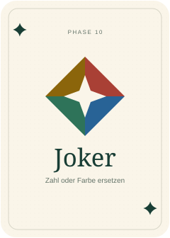
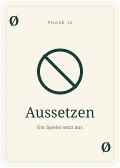
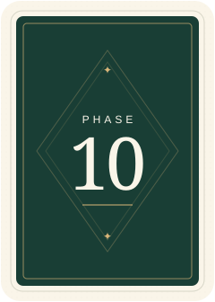
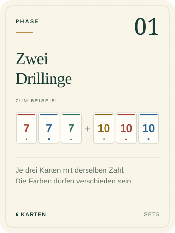
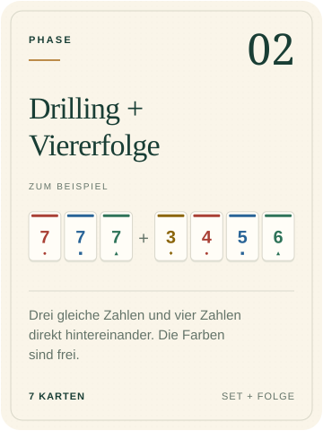
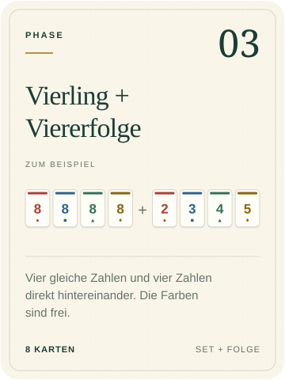
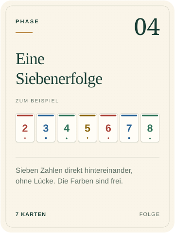
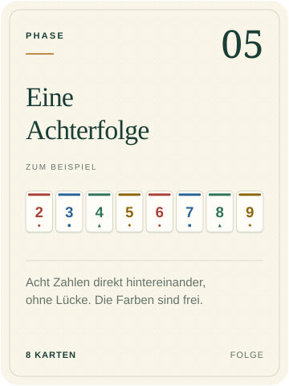
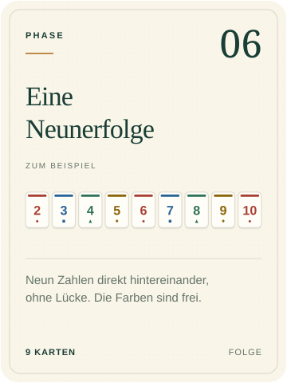

Welches Spiel?
Wähle ein Spiel aus.

Phase10 spielen
Der Spieltisch wird geladen.
Offlinebetrieb wird vorbereitet …
Als App installieren
Auf dem iPhone:
- Diese Seite in Safari öffnen und auf „Teilen“ tippen.
- „Zum Home-Bildschirm“ wählen. Falls angezeigt, „Als Web-App öffnen“ einschalten und auf „Hinzufügen“ tippen.
- Die App über das neue Symbol öffnen und einmal online warten, bis „Offline bereit“ erscheint. Danach kannst du ohne Internet spielen.
Auf anderen Geräten findest du „App installieren“ im Browsermenü, sofern unterstützt.
Phasen und Regeln
PHASE 10ÜBERSICHT
Die zehn Phasen.
- 01Zwei Drillinge
- 02Drilling + Viererfolge
- 03Vierling + Viererfolge
- 04Siebenerfolge
- 05Achterfolge
- 06Neunerfolge
- 07Zwei Vierlinge
- 087 Karten einer Farbe
- 09Fünfling + Zwilling
- 10Fünfling + Drilling
Eine Phase pro Runde.
Das Deck: 108 Karten
Jede Zahl von 1 bis 12 gibt es zweimal pro Farbe. Dazu kommen Joker und Aussetzen-Karten.
| Karten | Zahlen | Häufigkeit | Anzahl |
|---|---|---|---|
| Rot | 1–12 | 2× pro Zahl | 24 |
| Blau | 1–12 | 2× pro Zahl | 24 |
| Grün | 1–12 | 2× pro Zahl | 24 |
| Gelb | 1–12 | 2× pro Zahl | 24 |
| Joker | — | 8× | 8 |
| Aussetzen | — | 4× | 4 |
| Spielkarten insgesamt | 108 | ||
2 Übersichtskarten liegen zusätzlich bei: 110 Karten in der klassischen Packung. Die Übersichten werden nicht eingemischt.






Tippe auf eine Spielkarte, um ihr SVG herunterzuladen.
Phasenkarten
Die Zahlen auf den Karten sind Beispiele. Du kannst jede passende Kombination bilden.

Karte herunterladen

Karte herunterladen

Karte herunterladen

Karte herunterladen

Karte herunterladen

Karte herunterladen